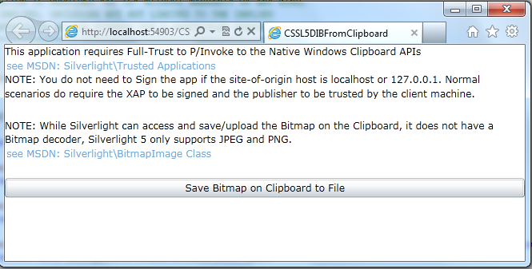

Save a DIB on the Clipboard to a File using Silverlight (CSSL5DIBFromClipboard)
How to save a DIB on the Clipboard to a File using Silverlight (CSSL5DIBFromClipboard)
Introduction
This code sample demonstrates accessing the Windows Clipboard and retrieving a Device Independent Bitmap (DIB) and saving the DIB to a file.
Building the Sample
This Sample requires Silverlight 5 Tools for Visual Studio 2010 SP1.
Running the Sample
1. Set CSSL5DIBFromClipboard.Web to the startup project.
2. Set CSSL5DIBFromClipboardTestPage.html as the Start Page.
3. Build and Run the solution
4. Press "PrtScn" or copy a Bitmap to the clipboard using other means such as MSPaint
5. Press the "Save Bitmap on Clipboard to File" button
6. Use the SaveFileDialog to save the Bitmap to disk.

Using the Code
You can reuse this code if your application needs to attach bitmap data from the clipboard.
The following code snippet shows the wrapper class.
public static class NativeMethods
{
[DllImport("user32.dll", EntryPoint = "OpenClipboard", CharSet = CharSet.Auto, SetLastError = true)]
public static extern bool OpenClipboard(IntPtr hWndNewOwner);
[DllImport("user32.dll", EntryPoint = "CloseClipboard", CharSet = CharSet.Auto, SetLastError = true)]
public static extern bool CloseClipboard();
[DllImport("user32.dll", EntryPoint = "IsClipboardFormatAvailable", CharSet = CharSet.Auto, SetLastError = true)]
public static extern bool IsClipboardFormatAvailable(uint fmt);
[DllImport("user32.dll", EntryPoint = "GetClipboardData", CharSet = CharSet.Auto, SetLastError = true)]
public static extern IntPtr GetClipboardData(uint fmt);
[DllImport("kernel32.dll", CharSet = CharSet.Auto, SetLastError = true)]
[return: MarshalAs(UnmanagedType.Bool)]
public static extern bool CloseHandle(IntPtr hObject);
[DllImport("kernel32.dll", CharSet = CharSet.Auto, SetLastError = true)]
public static extern IntPtr GlobalLock(IntPtr hObject);
[DllImport("kernel32.dll", CharSet = CharSet.Auto, SetLastError = true)]
public static extern int GlobalSize(IntPtr hGlobal);
[DllImport("kernel32.dll", CharSet = CharSet.Auto, SetLastError = true)]
public static extern bool GlobalUnlock(IntPtr hObject);
// See http://msdn.microsoft.com/en-us/library/windows/desktop/ff729168(v=vs.85).aspx for clipboard formats
public const uint CF_DIB = 8;
}
public static class NativeMethods { [DllImport("user32.dll", EntryPoint = "OpenClipboard", CharSet = CharSet.Auto, SetLastError = true)] public static extern bool OpenClipboard(IntPtr hWndNewOwner); [DllImport("user32.dll", EntryPoint = "CloseClipboard", CharSet = CharSet.Auto, SetLastError = true)] public static extern bool CloseClipboard(); [DllImport("user32.dll", EntryPoint = "IsClipboardFormatAvailable", CharSet = CharSet.Auto, SetLastError = true)] public static extern bool IsClipboardFormatAvailable(uint fmt); [DllImport("user32.dll", EntryPoint = "GetClipboardData", CharSet = CharSet.Auto, SetLastError = true)] public static extern IntPtr GetClipboardData(uint fmt); [DllImport("kernel32.dll", CharSet = CharSet.Auto, SetLastError = true)] [return: MarshalAs(UnmanagedType.Bool)] public static extern bool CloseHandle(IntPtr hObject); [DllImport("kernel32.dll", CharSet = CharSet.Auto, SetLastError = true)] public static extern IntPtr GlobalLock(IntPtr hObject); [DllImport("kernel32.dll", CharSet = CharSet.Auto, SetLastError = true)] public static extern int GlobalSize(IntPtr hGlobal); [DllImport("kernel32.dll", CharSet = CharSet.Auto, SetLastError = true)] public static extern bool GlobalUnlock(IntPtr hObject); // See http://msdn.microsoft.com/en-us/library/windows/desktop/ff729168(v=vs.85).aspx for clipboard formats public const uint CF_DIB = 8; }
private void SaveDIBOnClipboardToFile()
{
// Check to see if we've got trust
// http://msdn.microsoft.com/en-us/library/system.windows.application.haselevatedpermissions(v=vs.95).aspx
if (true == Application.Current.HasElevatedPermissions)
{
// Get Data off the Clipboard
bool res = NativeMethods.OpenClipboard(IntPtr.Zero);
if (NativeMethods.IsClipboardFormatAvailable(NativeMethods.CF_DIB))
{
// Save the clipboard data to this stream,
// the stream could also come from HttpWebRequest, File, or other source.
IntPtr clipboardDataHandle = NativeMethods.GetClipboardData(NativeMethods.CF_DIB);
IntPtr ptr = NativeMethods.GlobalLock(clipboardDataHandle);
byte[] buffer = HGlobalToByteArray(ptr);
NativeMethods.GlobalUnlock(clipboardDataHandle);
NativeMethods.CloseClipboard();
// Pick someplace to Save the File
SaveFileDialog sfd = new SaveFileDialog();
if (true == sfd.ShowDialog())
{
Stream fs = sfd.OpenFile();
WriteBitmapFileToStream(buffer, fs);
fs.Close();
fs.Dispose();
}
}
}
}
private void SaveDIBOnClipboardToFile() { // Check to see if we've got trust // http://msdn.microsoft.com/en-us/library/system.windows.application.haselevatedpermissions(v=vs.95).aspx if (true == Application.Current.HasElevatedPermissions) { // Get Data off the Clipboard bool res = NativeMethods.OpenClipboard(IntPtr.Zero); if (NativeMethods.IsClipboardFormatAvailable(NativeMethods.CF_DIB)) { // Save the clipboard data to this stream, // the stream could also come from HttpWebRequest, File, or other source. IntPtr clipboardDataHandle = NativeMethods.GetClipboardData(NativeMethods.CF_DIB); IntPtr ptr = NativeMethods.GlobalLock(clipboardDataHandle); byte[] buffer = HGlobalToByteArray(ptr); NativeMethods.GlobalUnlock(clipboardDataHandle); NativeMethods.CloseClipboard(); // Pick someplace to Save the File SaveFileDialog sfd = new SaveFileDialog(); if (true == sfd.ShowDialog()) { Stream fs = sfd.OpenFile(); WriteBitmapFileToStream(buffer, fs); fs.Close(); fs.Dispose(); } } } }
More Information
·
For more information please see the Trusted Applications topic for Silverlight in MSDN
http://msdn.microsoft.com/en-us/library/ee721083(v=VS.95).aspx
·
Using the Clipboard
http://msdn.microsoft.com/en-us/library/windows/desktop/ms649016(v=vs.85).aspx
·
Storing an Image
http://msdn.microsoft.com/en-us/library/dd145119(v=vs.85).aspx